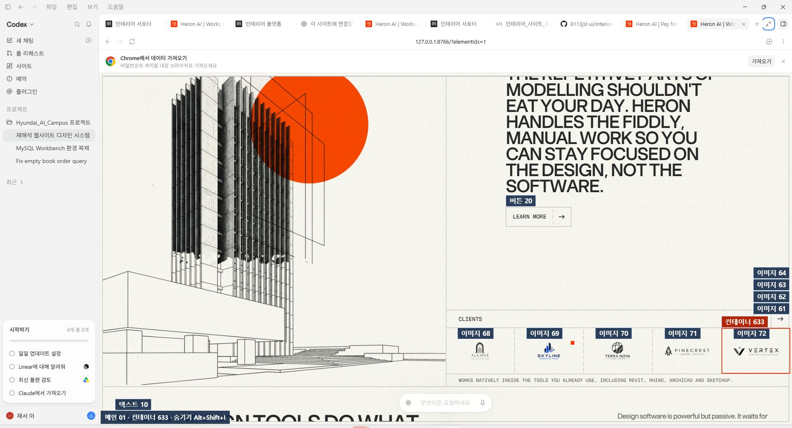

네임태그 개발자 모드
프로젝트 루트에서 npm install 후 npm start로 개발 서버를 실행하고 아래 링크를 여세요. 기본 로컬 포트는 8766입니다.
버튼 01 · 이미지 02 · 텍스트 03 형태로 표시합니다. Alt+Shift+I로 표시를 전환합니다. 운영 환경에서는 네임태그가 표시되지 않습니다.
실제 메인 화면 HTML은 public/index.html, 공통 네임태그 구현은 public/ui/element-identities.js입니다. 이 파일은 실행 링크와 첨부 화면을 보관하는 안내 HTML입니다.
